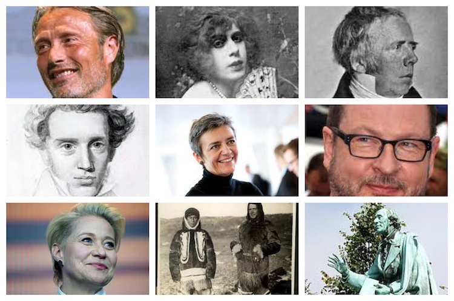
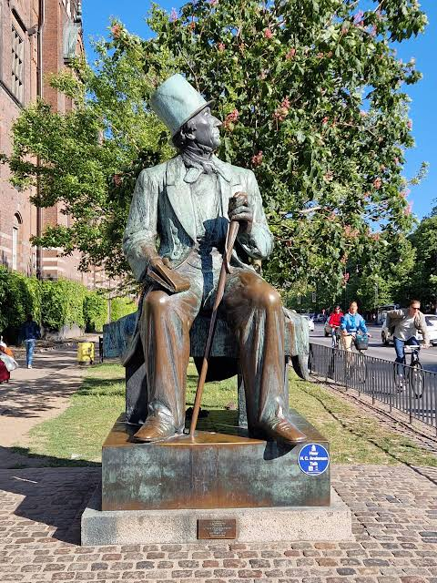

CityLoop Quest Copenhague


Hans Christian Andersen est devenu l’ambassadeur littéraire de Copenhague, même s’il naît à Odense en 1805. Arrivé dans la capitale à quatorze ans avec le rêve du théâtre, il connaît pauvreté, humiliations et longues années d’apprentissage avant de publier romans, récits de voyage et contes. Ses adresses successives à Nyhavn rappellent qu’il vivait au milieu des marins, logeurs et voyageurs, loin de l’image d’un écrivain enfermé dans une tour d’ivoire.

Søren Kierkegaard, né en 1813, parcourt sans cesse les mêmes rues en observant les passants. Philosophe de l’angoisse, du choix et de la responsabilité individuelle, il transforme la promenade urbaine en méthode de pensée. Sa relation rompue avec Regine Olsen nourrit une partie de son œuvre et de sa légende. Sa tombe au cimetière Assistens reste volontairement simple par rapport à l’influence immense de ses textes.
Christian IV domine la ville par les bâtiments qu’il a laissés. Roi énergique, entrepreneur infatigable et chef de guerre souvent malheureux, il fait construire Rosenborg, Børsen, la Tour Ronde et Christianshavn. Son œil blessé lors de la bataille de Kolberger Heide en 1644 devient un élément de propagande héroïque. Derrière le bâtisseur se cache toutefois un royaume fragilisé par des guerres coûteuses.
Niels Bohr donne à Copenhague un autre type de rayonnement. Né en 1885, il élabore un modèle de l’atome qui lui vaut le prix Nobel de physique en 1922. Son institut attire des chercheurs du monde entier et devient un foyer de la physique quantique. D’origine juive par sa mère, Bohr fuit vers la Suède en 1943, puis participe aux travaux alliés avant de défendre l’usage pacifique de la science.

Arne Jacobsen, né en 1902, dessine bâtiments, meubles, lampes et objets avec une précision totale. L’hôtel SAS, Bellavista, l’école Munkegård et les chaises Fourmi, Œuf ou Cygne montrent plusieurs facettes de son modernisme. Ses créations paraissent évidentes après coup, mais elles naissent d’innombrables dessins et prototypes. Copenhague se lit ainsi à travers des personnalités très différentes : un roi bâtisseur, un conteur voyageur, un philosophe marcheur, un physicien et un architecte qui ont chacun transformé leur discipline.